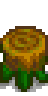
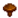
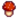
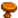

Pilz-Baumstamm
| Pilz-Baumstamm | |
|  |
|
| Bringt immer wieder Pilze hervor. Je mehr wilde Bäume in der Nähe sind, desto besser funktioniert es. | |
| Information | |
| Quelle | Sammeln |
| Herstellung | |
| Rezept von | |
| Zutaten | |
| Produziert | |
Das Pilz-Baumstamm ist ein herstellbarer Gegenstand, der Pilze produziert. Das Rezept ist ab Sammeln-Stufe 4 verfügbar. 4 Pilzscheite können als siebter Preis von der Gewinnmaschine belohnt werden (33 % Chance).. Pilz-Baumstämme geben 5 Sammel-Erfahrung beim Ernten.
Funktionsweise
Der Pilzstamm produziert alle 4 Tage Pilze, an regnerischen Tagen dauert dies einen Tag weniger. Produziert zu jeder Jahreszeit Pilze.
Menge
Die Menge der produzierten Pilze steigt mit der Menge an Wildbäumen – also Nicht-Obstbäumen – im 7×7-Quadrat um den Pilzstamm herum, einschließlich nicht ausgewachsener Bäume. Die Menge der erzeugten Pilze, die auf 1 bis 5 begrenzt ist, wird berechnet, indem die Anzahl der Bäume in der Nähe ermittelt wird, diese durch zwei, abgerundet und zufällig mit 1 oder 2 multipliziert wird.[1] Daher ist die Die Anzahl der Bäume in der Nähe, die benötigt wird, um immer die maximale Anzahl von 5 zu erreichen, beträgt 10.
Art
Die Art der produzierten Pilze hängt von der Baumart in der Nähe ab. Der Spielcode erstellt eine Liste möglicher Pilze basierend auf nahe gelegenen Bäumen und wählt dann zufällig einen aus dieser Liste aus.
- Zuerst ermittelt das Spiel, wie viele Bäume sich in dem 7×7-Quadrat um das Spiel herum befinden, einschließlich unreifer Bäume. Diese Zahl wird mit 3/4 multipliziert, abgerundet und so viele Pilze (mindestens einer) werden der Liste hinzugefügt, zufällig ausgewählt zwischen Violetten Pilzen (5 %), Roten Pilzen (14,25 %) und Gewöhnlichen Pilzen (80,75 %).
- Dann wird für jeden "ausgewachsenen" Baum ein weiterer Pilz hinzugefügt. Wenn es sich bei dem Baum um eine Eiche handelt, ist der hinzugefügte Pilz immer eine Morchel. Das Gleiche gilt für Kiefern mit Pfifferlingen und für Mystische Bäume mit Violetten Pilzen. Ahornbäume haben eine Chance von 10 %, einen Violette Pilze zu geben, und eine Chance von 90 %, einen Roten Pilz zu geben. Wenn der ausgewachsene Baum keiner dieser Typen ist, wird die gleiche Verteilung wie in Schritt 1 verwendet.
- Schließlich wird ein zufälliger Pilz aus der zweiten Liste generiert.[1]
Dieser Prozess macht es unmöglich, eine einzelne Pilzart zu garantieren, da jeder hinzugefügte Baum nicht nur zur Wahrscheinlichkeit des zugehörigen Pilzes beiträgt, sondern auch zur Wahrscheinlichkeit von roten, gewöhnlichen und violetten Pilzen. Aufgrund der Rundung der Anzahl der Bäume in Schritt 1 erhöht das Hinzufügen weiterer Bäume nicht immer die Chance auf den zugehörigen Pilz.
Unten finden Sie eine Tabelle mit der Chance, jede Pilzart zu erhalten, wenn der Pilzstamm von einer einzigen Baumart umgeben ist. Das Mischen von Bäumen führt zu komplexeren Verteilungen, die individuell berechnet werden müssen. Da unreife Bäume zur Anzahl der Grundverbreitungspilze beitragen, nicht aber zur Anzahl der Spezialpilze, sind diese Werte erst dann korrekt, wenn alle Bäume ausgewachsen sind.
| Pilzwahrscheinlichkeiten mit einem einzelnen Baumtyp | ||||||||||||||||||
|---|---|---|---|---|---|---|---|---|---|---|---|---|---|---|---|---|---|---|
| Anzahl der verändernden ausgewachsenen Bäume |
Anzahl der verbreiteten Pilze |
% Gewöhnlicher Pilz  | % Roter Pilz  (Not Maple Tree) |
% Violetter Pilz (Not Maple or Mystic Tree) |
% Morchel (Oak Tree) |
% Pfifferling  (Pine Tree) |
% Roter Pilz (Maple Tree) |
% Violetter Pilz (Maple Tree) |
% Violetter Pilz (Mystic Tree) | |||||||||
| 0 | 1 | 80.75% | 14.25% | 5.00% | N/A | N/A | N/A | N/A | N/A | |||||||||
| 1 | 1 | 40.38% | 7.12% | 2.50% | 50.00% | 50.00% | 52.13% | 7.50% | 52.50% | |||||||||
| 2 | 1 | 26.92% | 4.75% | 1.67% | 66.67% | 66.67% | 64.75% | 8.33% | 68.33% | |||||||||
| 3 | 2 | 32.30% | 5.70% | 2.00% | 60.00% | 60.00% | 59.70% | 8.00% | 62.00% | |||||||||
| 4 | 3 | 34.61% | 6.11% | 2.14% | 57.14% | 57.14% | 57.54% | 7.86% | 59.29% | |||||||||
| 5 | 3 | 30.28% | 5.34% | 1.88% | 62.50% | 62.50% | 61.59% | 8.13% | 64.38% | |||||||||
| 6 | 4 | 32.30% | 5.70% | 2.00% | 60.00% | 60.00% | 59.70% | 8.00% | 62.00% | |||||||||
| 7 | 5 | 33.65% | 5.94% | 2.08% | 58.33% | 58.33% | 58.44% | 7.92% | 60.42% | |||||||||
| 8 | 6 | 34.61% | 6.11% | 2.14% | 57.14% | 57.14% | 57.54% | 7.86% | 59.29% | |||||||||
| 9 | 6 | 32.30% | 5.70% | 2.00% | 60.00% | 60.00% | 59.70% | 8.00% | 62.00% | |||||||||
| 10 | 7 | 33.25% | 5.87% | 2.06% | 58.82% | 58.82% | 58.81% | 7.94% | 60.88% | |||||||||
| 11 | 8 | 34.00% | 6.00% | 2.11% | 57.89% | 57.89% | 58.11% | 7.89% | 60.00% | |||||||||
| 12 | 9 | 34.61% | 6.11% | 2.14% | 57.14% | 57.14% | 57.54% | 7.86% | 59.29% | |||||||||
| 13 | 9 | 33.03% | 5.83% | 2.05% | 59.09% | 59.09% | 59.01% | 7.95% | 61.14% | |||||||||
| 14 | 10 | 33.65% | 5.94% | 2.08% | 58.33% | 58.33% | 58.44% | 7.92% | 60.42% | |||||||||
| 14 | 11 | 34.16% | 6.03% | 2.12% | 57.69% | 57.69% | 57.95% | 7.88% | 59.81% | |||||||||
| 16 | 12 | 34.61% | 6.11% | 2.14% | 57.14% | 57.14% | 57.54% | 7.86% | 59.29% | |||||||||
Qualität
Die Qualität der produzierten Pilze kann variieren, wird aber durch den Beruf Botanist nicht beeinflusst. Stattdessen wird die Qualität anhand der Anzahl der Bäume in der Nähe, einschließlich unreifer Bäume, und der Anzahl davon mit Moos berechnet. Jeder Baum in der Nähe wird gezählt, wobei bemooste Bäume doppelt gezählt werden. Diese Zahl wird dann durch 40 geteilt und dient als Chance für eine Qualitätsverbesserung. Diese Chance tritt wiederholt auf, bis sie ausfällt oder Iridiumqualität erreicht.[1] Wenn also beispielsweise 20 gezählt werden, beträgt die Chance 0,5, was bedeutet, dass eine Chance von 50 % auf normale Qualität und eine Chance von 25 % besteht Silberqualität, 12,5 % Chance auf Goldqualität und 12,5 % Chance auf Iridiumqualität. Nachfolgend finden Sie eine vollständige Wahrscheinlichkeitstabelle für jede Pilzqualität, abhängig von der Menge an Bäumen und Moos, zusammen mit dem erwarteten Multiplikator für den Verkaufspreis.
| Wahrscheinlichkeiten für jede Qualität | |||||
|---|---|---|---|---|---|
| Baum & Moos Zahl | % Basisqualität | % Silber Qualität | % Gold Qualität | % Iridium Qualität | Durchschnittlicher Preis Mulitplikator |
| 0 | 100.00% | 0.00% | 0.00% | 0.00% | 100.00% |
| 1 | 97.50% | 2.44% | 0.06% | 0.00% | 100.64% |
| 2 | 95.00% | 4.75% | 0.24% | 0.01% | 101.32% |
| 3 | 92.50% | 6.94% | 0.52% | 0.04% | 102.04% |
| 4 | 90.00% | 9.00% | 0.90% | 0.10% | 102.80% |
| 5 | 87.50% | 10.94% | 1.37% | 0.20% | 103.61% |
| 6 | 85.00% | 12.75% | 1.91% | 0.34% | 104.48% |
| 7 | 82.50% | 14.44% | 2.53% | 0.54% | 105.41% |
| 8 | 80.00% | 16.00% | 3.20% | 0.80% | 106.40% |
| 9 | 77.50% | 17.44% | 3.92% | 1.14% | 107.46% |
| 10 | 75.00% | 18.75% | 4.69% | 1.56% | 108.59% |
| 11 | 72.50% | 19.94% | 5.48% | 2.08% | 109.81% |
| 12 | 70.00% | 21.00% | 6.30% | 2.70% | 111.10% |
| 13 | 67.50% | 21.94% | 7.13% | 3.43% | 112.48% |
| 14 | 65.00% | 22.75% | 7.96% | 4.29% | 113.96% |
| 15 | 62.50% | 23.44% | 8.79% | 5.27% | 115.53% |
| 16 | 60.00% | 24.00% | 9.60% | 6.40% | 117.20% |
| 17 | 57.50% | 24.44% | 10.39% | 7.68% | 118.98% |
| 18 | 55.00% | 24.75% | 11.14% | 9.11% | 120.87% |
| 19 | 52.50% | 24.94% | 11.85% | 10.72% | 122.87% |
| 20 | 50.00% | 25.00% | 12.50% | 12.50% | 125.00% |
| 21 | 47.50% | 24.94% | 13.09% | 14.47% | 127.25% |
| 22 | 45.00% | 24.75% | 13.61% | 16.64% | 129.63% |
| 23 | 42.50% | 24.44% | 14.05% | 19.01% | 132.15% |
| 24 | 40.00% | 24.00% | 14.40% | 21.60% | 134.80% |
| 25 | 37.50% | 23.44% | 14.65% | 24.41% | 137.60% |
| 26 | 35.00% | 22.75% | 14.79% | 27.46% | 140.54% |
| 27 | 32.50% | 21.94% | 14.81% | 30.75% | 143.64% |
| 28 | 30.00% | 21.00% | 14.70% | 34.30% | 146.90% |
| 29 | 27.50% | 19.94% | 14.45% | 38.11% | 150.32% |
| 30 | 25.00% | 18.75% | 14.06% | 42.19% | 153.91% |
| 31 | 22.50% | 17.44% | 13.51% | 46.55% | 157.66% |
| 32 | 20.00% | 16.00% | 12.80% | 51.20% | 161.60% |
| 33 | 17.50% | 14.44% | 11.91% | 56.15% | 165.72% |
| 34 | 15.00% | 12.75% | 10.84% | 61.41% | 170.02% |
| 35 | 12.50% | 10.94% | 9.57% | 66.99% | 174.51% |
| 36 | 10.00% | 9.00% | 8.10% | 72.90% | 179.20% |
| 37 | 7.50% | 6.94% | 6.42% | 79.15% | 184.09% |
| 38 | 5.00% | 4.75% | 4.51% | 85.74% | 189.18% |
| 39 | 2.50% | 2.44% | 2.38% | 92.69% | 194.48% |
| 40+ | 0.00% | 0.00% | 0.00% | 100.00% | 200.00% |
Referenzen
Geschichte
- 1.6: Zum Spiel hinzugefügt..